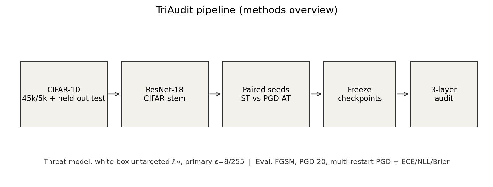
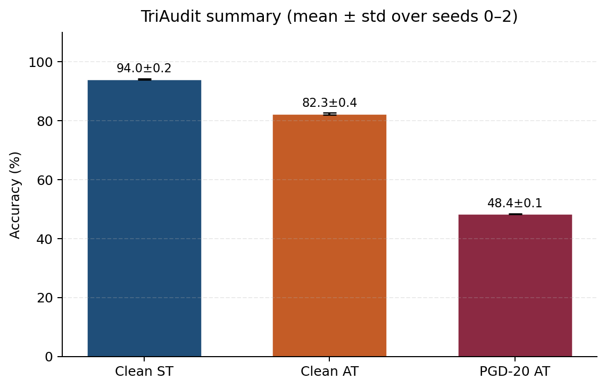
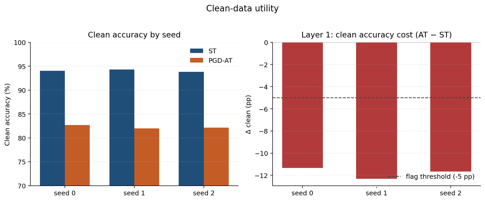
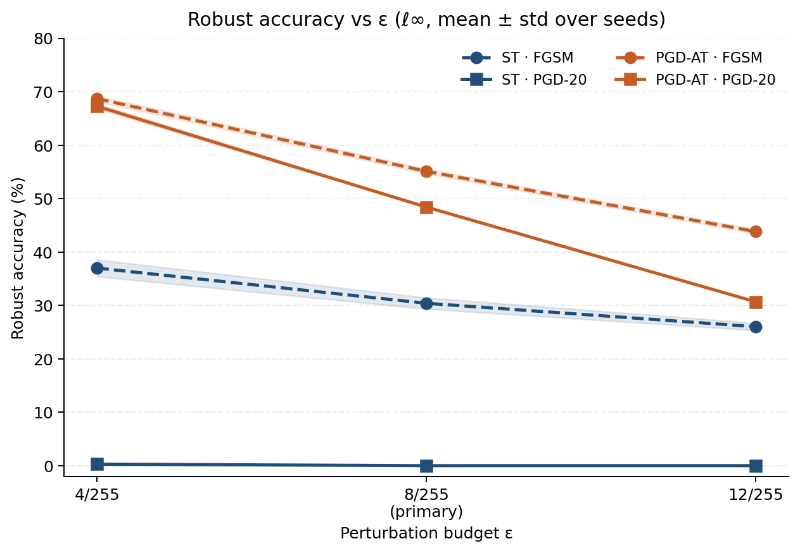
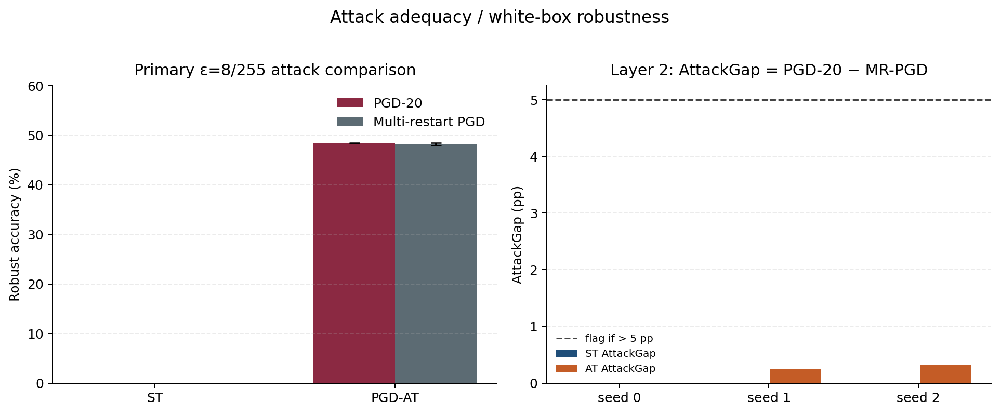
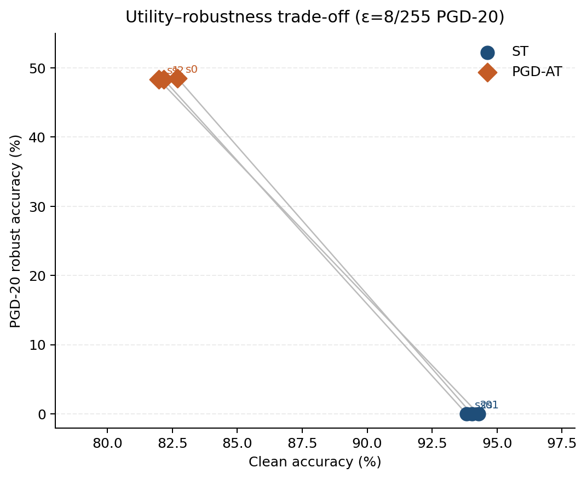
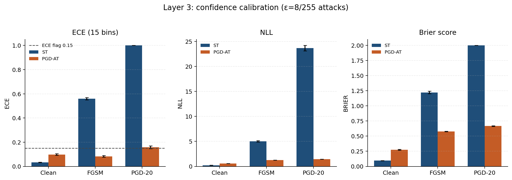
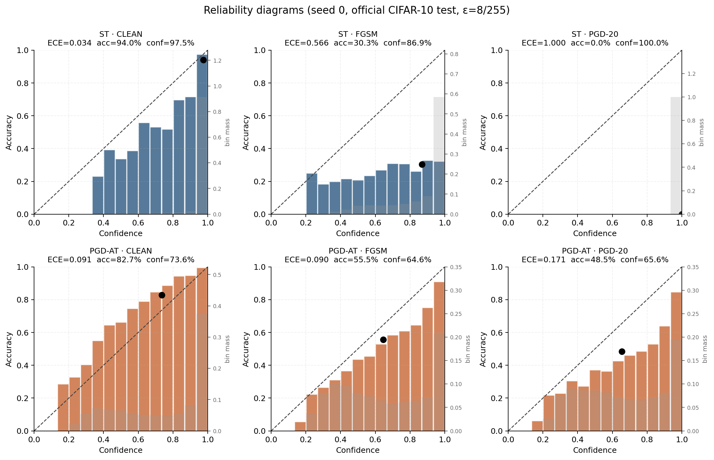
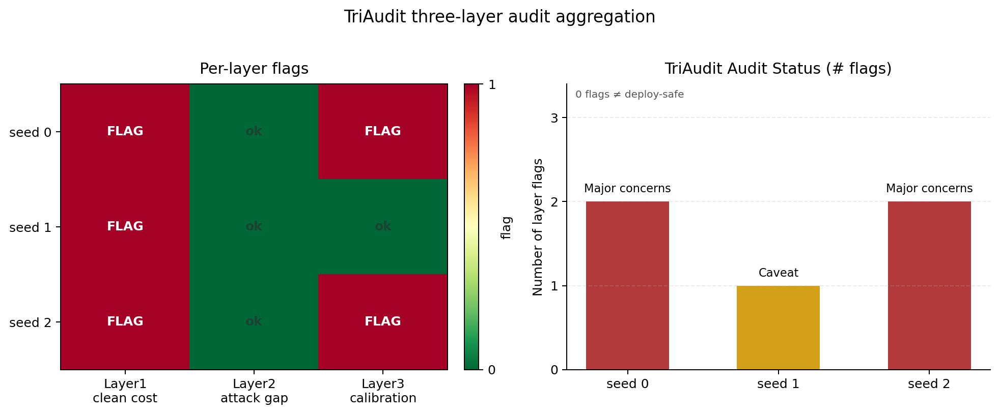

1
Clean utility
Does PGD-AT sacrifice too much clean accuracy versus the seed-matched ST model?
Flag if Δ_clean = Acc(AT) − Acc(ST) < −5 percentage points.
Empirical robustness report
A controlled audit of PGD adversarial training against seed-matched standard training on CIFAR-10. One model family, three questions: clean utility, white-box robustness, and confidence calibration.

End-to-end pipeline: paired seeds → attacks → calibration → TriAudit status.
01 — Overview
Adversarial training is often sold as a robustness upgrade. TriAudit checks what that upgrade actually costs and whether the evaluation is trustworthy enough to support a claim.
The study compares a CIFAR-adapted ResNet-18 trained with
standard cross-entropy against the same architecture trained with
PGD-AT (PGD-10 inside the training loop). Both conditions share
initialization and are repeated across seeds {0, 1, 2}.
Evaluation is deliberately scoped: white-box, untargeted, ℓ∞ perturbations with
primary budget ε = 8/255, plus sensitivity checks at
4/255 and 12/255.
TriAudit is not a deployment certificate. Passing every layer only means “no flags under the tested scope.” Missing metrics never count as a pass, and zero flags never means the model is safe to ship.
02 — Audit layers
Each layer asks a distinct question. Flags accumulate into a TriAudit status label from “No flags” to “Critical concerns.”
Does PGD-AT sacrifice too much clean accuracy versus the seed-matched ST model?
Flag if Δ_clean = Acc(AT) − Acc(ST) < −5 percentage points.
Is the white-box evaluation strong enough? Compare PGD-20 robust accuracy to
multi-restart PGD. Flag if
AttackGap = Rob(PGD-20) − Rob(MR-PGD) > 5 pp — a large gap
suggests the reported robustness may be optimistic.
Are predicted confidences reliable on clean and attacked inputs? Compute ECE
(15 equal-width bins), NLL, and multiclass Brier on clean / FGSM / PGD-20.
Flag if any evaluated ECE exceeds 0.15.
| Flags | Status label | Interpretation |
|---|---|---|
| 0 | No flags under tested scope | No layer crossed its threshold — still not a safety certificate. |
| 1 | Caveat | One concern worth reporting alongside any robustness claim. |
| 2 | Major concerns | Multiple issues; robustness narrative needs strong caveats. |
| 3 | Critical concerns | All layers flagged; claims should be heavily qualified. |
03 — Methods
The design goal is a fair paired contrast, not the strongest possible adversarial defense on every leaderboard.
[0, 1]; normalization lives inside the model so attacks clip in pixel space.8/255, α=2/255, random start.{0,1,2} with shared initialization copied into both arms.04 — Headline results
Across seeds, PGD-AT improves white-box robust accuracy but pays a large clean-accuracy cost. Attack adequacy looks healthy; calibration on PGD-20 inputs is the secondary concern.

| Seed | Clean ST | Clean AT | PGD-20 AT | Audit status |
|---|---|---|---|---|
| 0 | 94.03% | 82.70% | 48.50% | Major concerns |
| 1 | 94.29% | 81.97% | 48.35% | Caveat |
| 2 | 93.83% | 82.16% | 48.36% | Major concerns |
05 — Layer 1 · Clean utility
Layer 1 isolates the clean-accuracy price of adversarial training. In this study, every seed crosses the −5 pp threshold: the mean gap is about −11.8 percentage points.
That does not mean PGD-AT “failed.” It means any story that leads with robustness must also lead with the utility cost. TriAudit records the tradeoff explicitly instead of burying it in an appendix.
Note: AT used fewer epochs than ST in this release for compute control. Treat the absolute gap as an audit signal under that protocol, not a universal AT tax.

06 — Layer 2 · Robustness
At ε = 8/255, PGD-AT reaches roughly 48.4% PGD-20 robust accuracy. The AttackGap to multi-restart PGD stays small (~0.19 pp), so Layer 2 does not flag.



A small AttackGap is good news for evaluation credibility: the stronger multi-restart procedure does not collapse the reported robust accuracy. That supports reading the PGD-20 numbers as reasonably stable under this threat model — while remembering the threat model itself is narrow (white-box ℓ∞ only).
07 — Layer 3 · Calibration
Calibration asks whether a model’s confidence matches its frequency of being correct. TriAudit reports ECE with 15 equal-width bins, plus NLL and multiclass Brier, on clean images and on FGSM / PGD-20 adversaries.
Clean ECE for AT stays under the 0.15 threshold on average (~0.098). The recurring Layer-3 trigger is PGD-20 ECE on seeds 0 and 2, where confidence becomes less trustworthy precisely when the model is under attack.
Seed 1 stays just under the PGD-20 ECE threshold, which is why that seed lands at Caveat rather than Major concerns.


08 — Audit status
Layer 1 flags every seed. Layer 2 flags none. Layer 3 flags seeds 0 and 2. The resulting statuses are Major concerns / Caveat / Major concerns.

| Seed | Layer 1 | Layer 2 | Layer 3 | Status |
|---|---|---|---|---|
| 0 | Flagged (Δ ≈ −11.3 pp) | Clear (gap ≈ 0.00 pp) | Flagged (PGD-20 ECE) | Major concerns |
| 1 | Flagged (Δ ≈ −12.3 pp) | Clear (gap ≈ 0.24 pp) | Clear | Caveat |
| 2 | Flagged (Δ ≈ −11.7 pp) | Clear (gap ≈ 0.31 pp) | Flagged (PGD-20 ECE) | Major concerns |
09 — Limits
Full blueprint and limitations live in
TriAudit_Final_Project_Architecture.md and
reports/TriAudit_research_report.md.
10 — Reproduce & artifacts
From the repository root:
python -m venv .venv
source .venv/bin/activate # Windows: .venv\Scripts\activate
pip install -r requirements.txt
pip install -e .
python scripts/prepare_data.pyPhased orchestration:
python scripts/auto/run_phase.py --phase NRegenerate presentation figures from logged metrics:
PYTHONPATH=src python scripts/make_report_figures.py